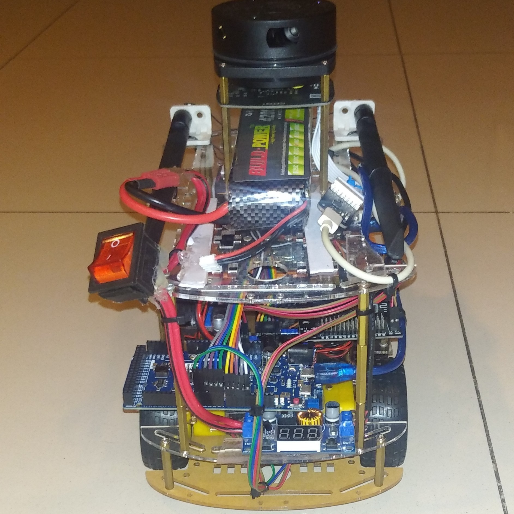

Autonomous Differential Drive Robot

This mobile platform is used for mapping and testing different slam approaches.
The platform is configured to dead reckoning with use of its encoders, set up for gmapping slam with lidar and odometry or rtabmap with the use of the calibrated camera.
Platform
Gmapping nodes run on the robot(nvidia jetson ) and use a 2d lidar to build a map, whilst publishing odometry of the robot and its imu data(orientation), respsectively to the odometry and transforms topics.
The map server runs on the actual robot, whilst a different computer in the network is used to view the live map and location of the robot during the live map on rviz.
At localisation stage the robot can be assigned a global goal to reach, whereby it will iteratively work out both local and global cost maps to reach the destination.